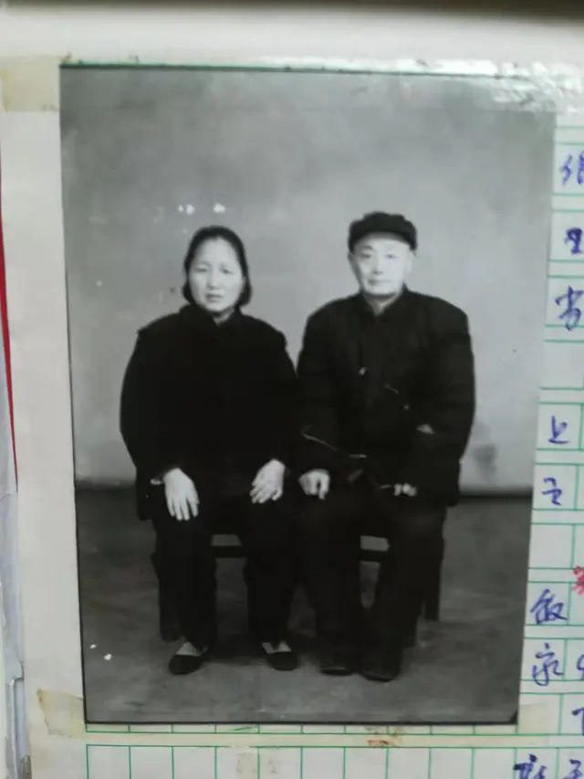

一点文章
小百货贩子、木材商人和作家，77 岁的王仁昌如何看待他的逆反一生｜汉口故事
2018 年，王仁昌的学生在博客里回忆其 36 年前的“一点往事”。当时，办公室的张女士是罗校长的情妇，张女士“专横拔扈，动不动就对老师颐指气使”，教师和学生都“敢怒不敢言”。有一次白天，他俩走进办公室，关上门，使得其他老师无法进去休息或备课。
“此时只见我的王老师仁昌兄，大步迈向办公室，重捶大门，厉声喝斥，他二人才装模作样地出来。罗校长故作镇定地吼道: ‘干什么啊你，我们在谈工作。’张姓女也狗仗人势地叫道:‘好你个王老师啊，你竟敢破坏校长工作。你必须要为你的行为承担一切后果！’仁昌兄强压怒火，义正辞严地问道: ‘请问谈工作需要独占办公室并紧关房门吗？而且外面敲门半天也不给开门吗？’问得这苟且二人哑口无言。围观的老师和学生越来越多，罗姓校长见势不妙，丢下一句：‘姓王的，你知道后果的！’ ，就从侧边楼梯溜之大吉。”
第二天，罗校长训斥王仁昌，“我们这里待遇比别的单位都好，工作几年后就可分到房子。别不知好歹啊！”结果，王仁昌走到他面前，拿出教案往桌上一摔，“罗校长，请你另请高明。我走了！”罗校长一愣，“怎么一说就要走啊？你的教学还是有成绩的，我们学校也是肯定你的！”但是，王仁昌没有理他，径直走出办公室。
用他学生的话说，王仁昌“性格耿直、嫉恶如仇、铮铮铁骨、鄙视权贵”；用他自己的话，他是典型的汉口人——粗犷、豪爽、直率、火爆，遇到看不惯的事情就喜欢说，“总想管一下”。当然，这样的特点也给他惹了不少麻烦，改变他的一生。
1969 年，王仁昌因为看不惯别人折磨“黑帮”（指“文革”中被打倒的人），让“黑帮”不淋雨，进屋吃饭。结果，书记认为其立场有问题，他被打入牛棚，接受批斗，从此灾难不断，最后蒙冤判刑 10 年。
1990 年，王仁昌因为看不惯工商局让个体户集资修大楼，发起“反摊派”，结果最后被迫离开汉正街。此前，他靠做个体户，成为改革开放后汉正街第一批百万富翁，也是汉正街个协分会常务理事、作家。
“如果我不管‘黑帮’，他们不会整我。他们搞集资，如果我不管个体户，也没有我的事。”王仁昌说。
但是，他总想管一下，也从不后悔。“因为我活得很潇洒，我只是想不停地折腾”。
他不完全同意心理学家亚伯拉罕·马斯洛的需求层次理论，觉得“人一辈子，应该做点事情。活一天，就要折腾一天”，自在就行，其他无所谓。毛泽东认为“与天斗，其乐无穷；与地斗，其乐无穷；与人斗，其乐无穷”，但他的观点是“折腾”，“我不和哪个人斗，我折腾自己”。
77 岁的王仁昌的确“折腾”了一生。他写作，喜欢写普通人的故事，认为“历史绝非所谓精英、权贵的年谱，无量数芸芸众生的悲欢离合才能标志某个时代的历史本质和最终取向”。毫无疑问，他自己的故事也属于其中之一。
有人说，王仁昌走路完全不像 70 多岁的人，说话像“愤青”。他说，我的记忆力相当强，现在看两遍七言四句古诗，还能够背。他还说，自己和儿女“没得谈”，觉得他们“蛮安逸”。“他们的思想就像我这个年纪人的思想，我的思想就像他们那个年纪人的思想，对调了！”

王仁昌父母合影照，来自：王仁昌